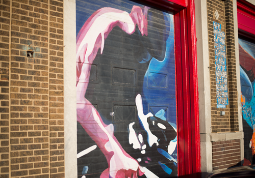

Made in Chicago is a collaborative reporting project produced by Northwestern University journalism graduate students.
ABOUT-
 CREATED
Jeppson's Malort: A search for the origins of Chicago's liquor Violin-Making Tunes A Global Beat From Chicago Citadels of Hope: YMCA outreach workers in Chicago First Defense Legal Aid: Chicago lawyers give free counsel in free time -
BUILT
Petrol Peril Bungalow: Chicago bungalow says welcome home for over a century Puerto Rican Restaurateur finds 'American Dream' in Chicago -
GROWN
Chicago Public Schools: Financial Woes Pilsen: Green Dreams, Industrial Roots Political newcomer defeats the mayor -
ENACTED
Black lives tortured: Chicago awards reparations to survivors of Burge police torture Midwives: Medical Societies Overshadow Growing Home birth Movement Abortion Escorts